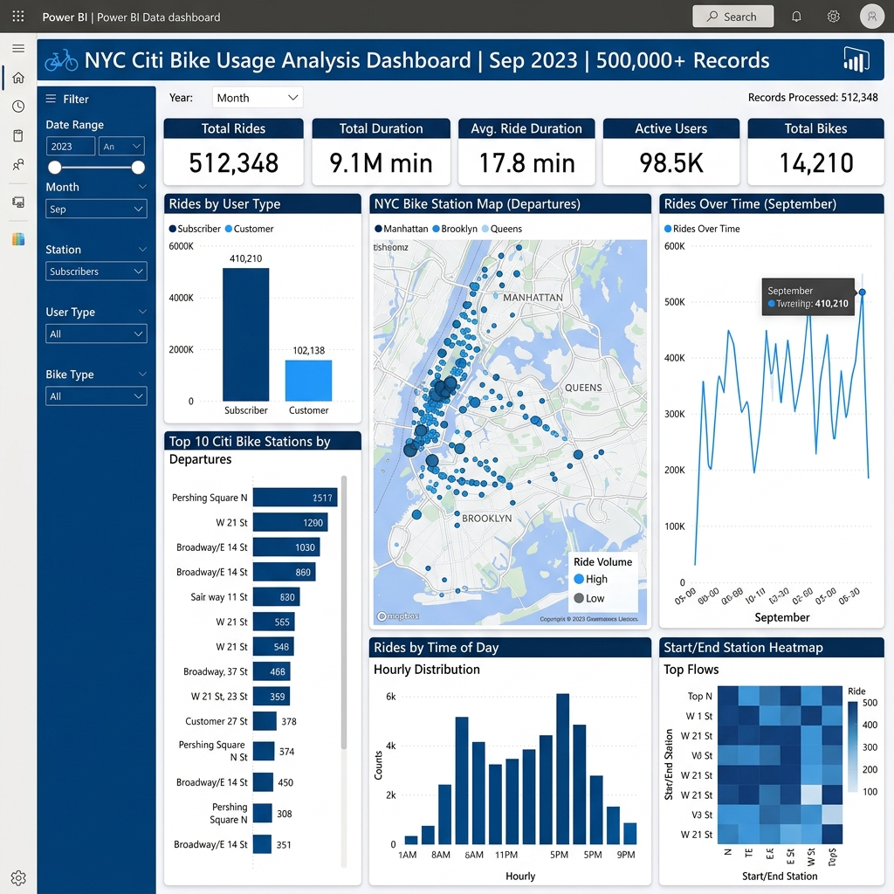
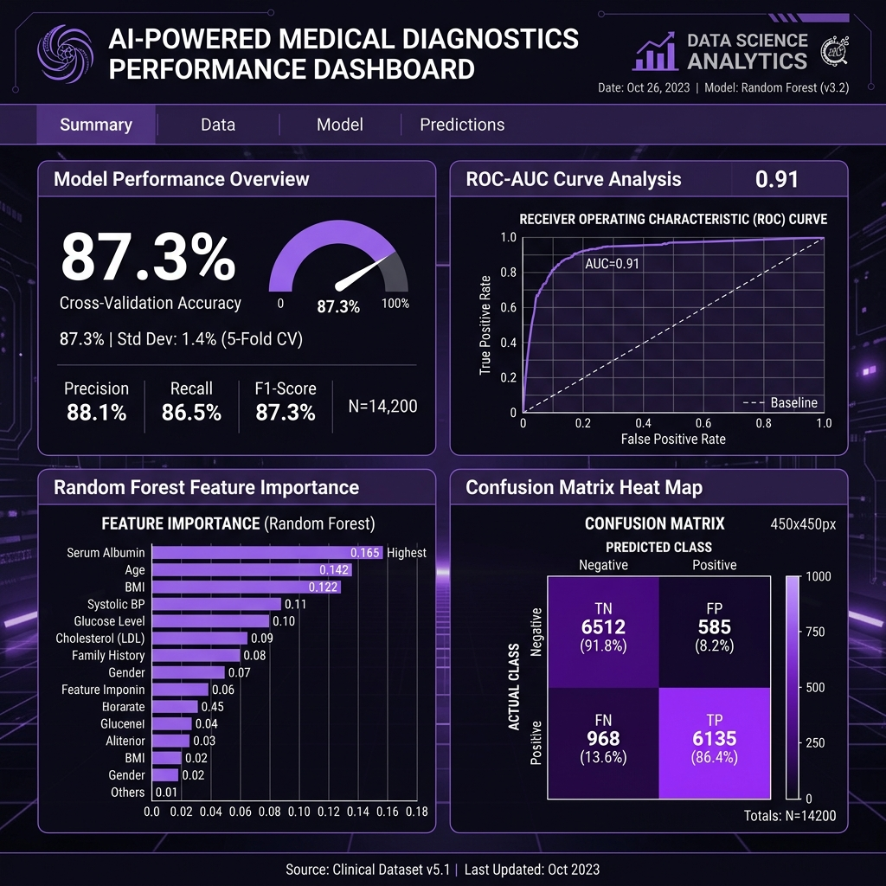
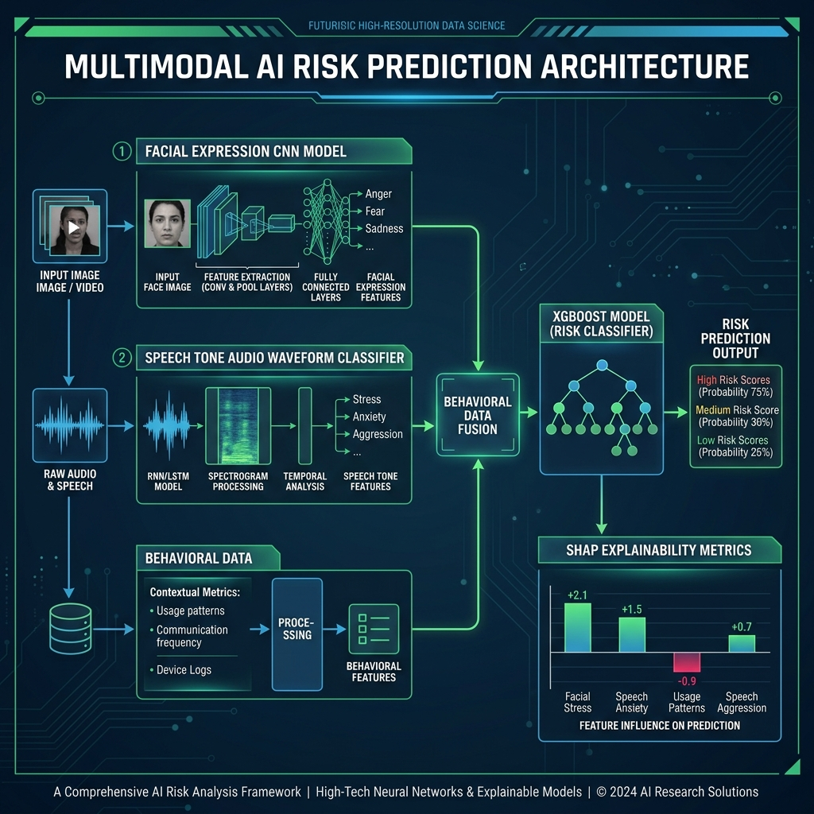
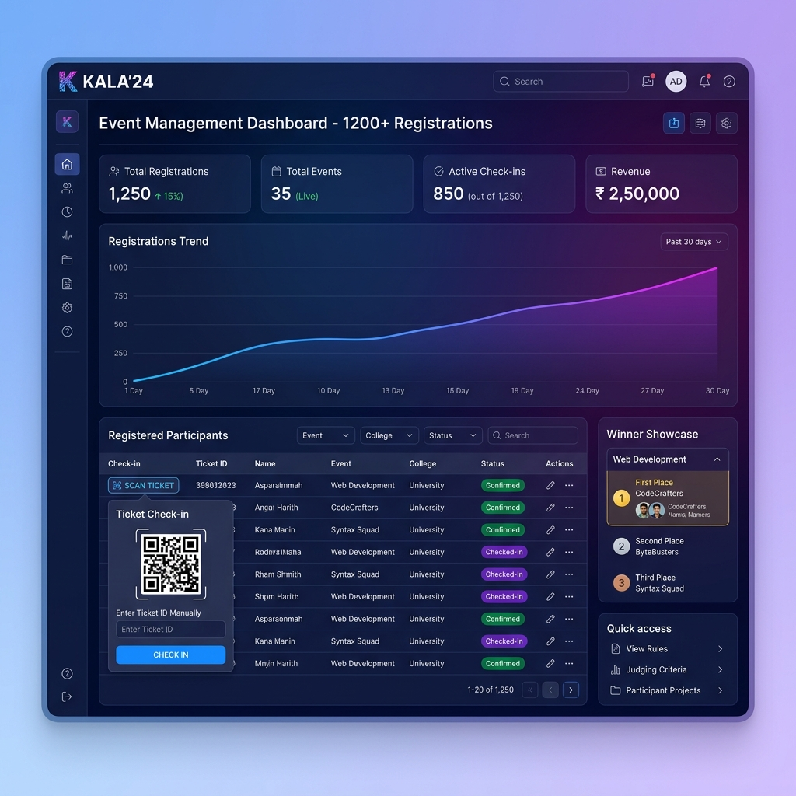
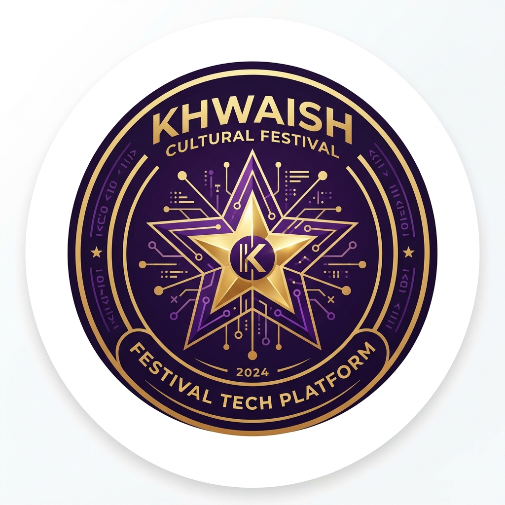
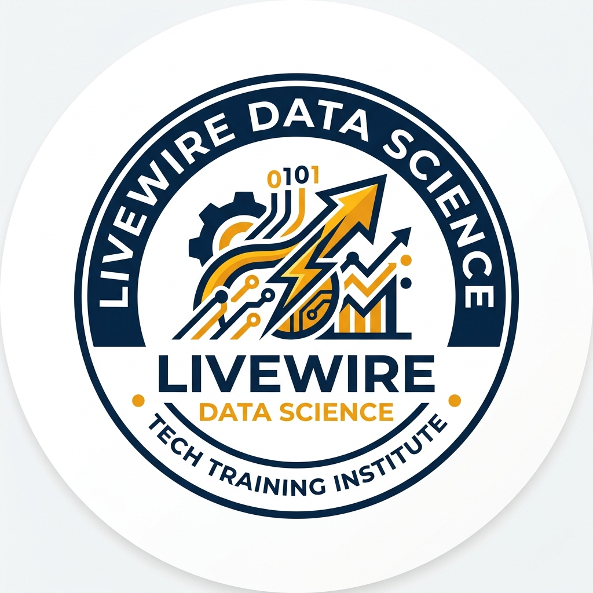

×

B.Sc. Data Science graduate (University of Mumbai, 8.9 CGPA) who builds analytical solutions from raw data — cleaning, exploring, modelling, and visualising to answer real business questions. Core toolkit: Python · SQL · Power BI · Scikit-learn.
I'm Subhash R. Koli — a Data Science graduate who works at the intersection of data analysis, machine learning, and business intelligence. My core toolkit is Python, SQL, Power BI, and Scikit-learn, applied to real datasets: cleaning 500K+ ride records, training and comparing ML classifiers on structured survey data, and building dashboards that surface actionable insights.
Beyond analytics, I've led a 5-person development team through a live event deployment (1,200+ registrations) and presented ML research at the University of Mumbai Avishkar Research Convention. I value rigour, transparency, and letting data — not claims — do the talking.
Currently seeking Data Analyst and Junior Data Science roles where I can contribute analytical depth and grow in a data-driven environment.
A focused toolkit — from data extraction and cleaning to dashboard storytelling and machine learning.
Selected data projects showcasing end-to-end analytics, machine learning research, and full-stack development.
Analysed 500K+ NYC Citi Bike ride records end-to-end: raw data ingestion, Python-based cleaning (identifying ~30% fewer data-quality issues), SQL querying, and interactive Power BI dashboards with DAX measures. Key finding: +35% weekend demand surge vs weekdays, pointing to fleet reallocation opportunities for peak and off-peak operations. Estimated ~40% reduction in manual reporting effort post-dashboard deployment.
Tip: slides render when this site is opened from a hosted URL (for example GitHub Pages).


Compared three supervised ML classifiers on 2,000+ structured health and emotional survey responses: Logistic Regression (baseline), Decision Tree, and Random Forest. Selected Random Forest via 5-fold cross-validation (87.3% mean accuracy, ROC-AUC 0.91). Evaluated precision-recall trade-offs, class imbalance handling, and feature importance. Presented full methodology at the University of Mumbai Avishkar Research Convention.
Note: Research prototype — results are not clinically validated.
Tip: slides render when this site is opened from a hosted URL (for example GitHub Pages).
Architected a multimodal AI research prototype classifying Low / Medium / High-risk behavioral states from labelled facial expression, speech-tone, and self-report behavioral data. Built CNN classifiers, an XGBoost late-fusion engine, and a Streamlit dashboard with SHAP explainability. Achieved 68% test accuracy on a constrained dataset — limitations include small sample size and absence of longitudinal validation.
Research prototype for experimentation and model evaluation. Not intended for medical, employment, security, or other high-stakes decisions.
Tip: slides render when this site is opened from a hosted URL (for example GitHub Pages).

Led a team of 5 developers to architect and deploy the official college cultural event platform. Built with HTML5, CSS3, JavaScript, PHP & MySQL with a real-time registration database. Successfully handled 1,200+ event registrations across a 3-day live event with stable deployment throughout. Won Best Web Dev Project — College Web Challenge 2024.
Tip: slides render when this site is opened from a hosted URL (for example GitHub Pages).

Where data thinking meets real-world application.

Khwaish Cultural Event · College ProjectFeedback from mentors, colleagues, and industry professionals.
Industry-recognised learning that goes beyond the classroom.

LIVEWIRE (UIF)Open to Data Analyst, Data Science, and ML internships and junior roles. Based in Mumbai — available for on-site, hybrid, and remote opportunities.